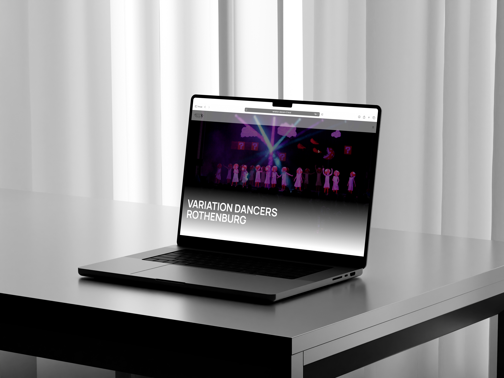

REDESIGN VARIATION DANCERS
Alleine
Web
2025
Für mein Mentorat habe ich das Redesign der Website der Variation Dancers Rothenburg erstellt – dem Tanzverein, in dem ich selbst tanze. Die Umsetzung erfolgte mit WordPress.